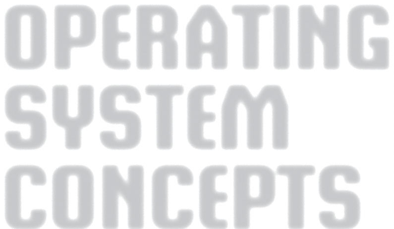

OPERATING
SYSTEM
CONCEPTS
ABRAHAM SILBERSCHATZ
Yale University
PETER BAER GALVIN
Pluribus Networks
GREG GAGNE
Westminster College
NINTH EDITION
Preface
Operating systems are an essential part of any computer system. Similarly,
a course on operating systems is an essential part of any computer science
education. This field is undergoing rapid change, as computers are now
prevalent in virtually every arena of day-to-day life—from embedded devices
in automobiles through the most sophisticated planning tools for governments
and multinational firms. Yet the fundamental concepts remain fairly clear, and
it is on these that we base this book.
We wrote this book as a text for an introductory course in operating systems
at the junior or senior undergraduate level or at the first-year graduate level. We
hope that practitioners will also find it useful. It provides a clear description of
the concepts that underlie operating systems. As prerequisites, we assume that
the reader is familiar with basic data structures, computer organization, and
a high-level language, such as C or Java. The hardware topics required for an
understanding of operating systems are covered in Chapter 1. In that chapter,
we also include an overview of the fundamental data structures that are
prevalent in most operating systems. For code examples, we use predominantly
C, with some Java, but the reader can still understand the algorithms without
a thorough knowledge of these languages.
Concepts are presented using intuitive descriptions. Important theoretical
results are covered, but formal proofs are largely omitted. The bibliographical
notes at the end of each chapter contain pointers to research papers in which
results were first presented and proved, as well as references to recent material
for further reading. In place of proofs, figures and examples are used to suggest
why we should expect the result in question to be true.
The fundamental concepts and algorithms covered in the book are often
based on those used in both commercial and open-source operating systems.
Our aim is to present these concepts and algorithms in a general setting that
is not tied to one particular operating system. However, we present a large
number of examples that pertain to the most popular and the most innovative
operating systems, including Linux, Microsoft Windows, Apple Mac OS X, and
Solaris. We also include examples of both Android and iOS, currently the two
dominant mobile operating systems.
The organization of the text reflects our many years of teaching courses on
operating systems, as well as curriculum guidelines published by the IEEE
vii
viii
Preface
Computing Society and the Association for Computing Machinery (ACM).
Consideration was also given to the feedback provided by the reviewers of
the text, along with the many comments and suggestions we received from
readers of our previous editions and from our current and former students.
Content of This Book
The text is organized in eight major parts:
• Overview. Chapters 1 and 2 explain what operating systems are, what
they do, and how they are designed and constructed. These chapters
discuss what the common features of an operating system are and what an
operating system does for the user. We include coverage of both traditional
PC and server operating systems, as well as operating systems for mobile
devices. The presentation is motivational and explanatory in nature. We
have avoided a discussion of how things are done internally in these
chapters. Therefore, they are suitable for individual readers or for students
in lower-level classes who want to learn what an operating system is
without getting into the details of the internal algorithms.
• Process management. Chapters 3 through 7 describe the process concept
and concurrency as the heart of modern operating systems. A process
is the unit of work in a system. Such a system consists of a collection
of concurrently executing processes, some of which are operating-system
processes (those that execute system code) and the rest of which are user
processes (those that execute user code). These chapters cover methods for
process scheduling, interprocess communication, process synchronization,
and deadlock handling. Also included is a discussion of threads, as well
as an examination of issues related to multicore systems and parallel
programming.
• Memory management. Chapters 8 and 9 deal with the management of
main memory during the execution of a process. To improve both the
utilization of the CPU and the speed of its response to its users, the
computer must keep several processes in memory. There are many different
memory-management schemes, reflecting various approaches to memory
management, and the effectiveness of a particular algorithm depends on
the situation.
• Storage management. Chapters 10 through 13 describe how mass storage,
the file system, and I/O are handled in a modern computer system. The
file system provides the mechanism for on-line storage of and access
to both data and programs. We describe the classic internal algorithms
and structures of storage management and provide a firm practical
understanding of the algorithms used—their properties, advantages, and
disadvantages. Since the I/O devices that attach to a computer vary widely,
the operating system needs to provide a wide range of functionality to
applications to allow them to control all aspects of these devices. We
discuss system I/O in depth, including I/O system design, interfaces, and
internal system structures and functions. In many ways, I/O devices are
the slowest major components of the computer. Because they represent a
Preface
ix
performance bottleneck, we also examine performance issues associated
with I/O devices.
• Protection and security. Chapters 14 and 15 discuss the mechanisms
necessary for the protection and security of computer systems. The
processes in an operating system must be protected from one another’s
activities, and to provide such protection, we must ensure that only
processes that have gained proper authorization from the operating system
can operate on the files, memory, CPU, and other resources of the system.
Protection is a mechanism for controlling the access of programs, processes,
or users to computer-system resources. This mechanism must provide a
means of specifying the controls to be imposed, as well as a means of
enforcement. Security protects the integrity of the information stored in
the system (both data and code), as well as the physical resources of the
system, from unauthorized access, malicious destruction or alteration, and
accidental introduction of inconsistency.
• Advanced topics. Chapters 16 and 17 discuss virtual machines and
distributed systems. Chapter 16 is a new chapter that provides an overview
of virtual machines and their relationship to contemporary operating
systems. Included is an overview of the hardware and software techniques
that make virtualization possible. Chapter 17 condenses and updates the
three chapters on distributed computing from the previous edition. This
change is meant to make it easier for instructors to cover the material in
the limited time available during a semester and for students to gain an
understanding of the core ideas of distributed computing more quickly.
• Case studies. Chapters 18 and 19 in the text, along with Appendices A and
B (which are available on (http://www.os-book.com), present detailed
case studies of real operating systems, including Linux, Windows 7,
FreeBSD, and Mach. Coverage of both Linux and Windows 7 are presented
throughout this text; however, the case studies provide much more detail.
It is especially interesting to compare and contrast the design of these two
very different systems. Chapter 20 briefly describes a few other influential
operating systems.
The Ninth Edition
As we wrote this Ninth Edition of Operating System Concepts, we were guided
by the recent growth in three fundamental areas that affect operating systems:
1. Multicore systems
2. Mobile computing
3. Virtualization
To emphasize these topics, we have integrated relevant coverage throughout
this new edition—and, in the case of virtualization, have written an entirely
new chapter. Additionally, we have rewritten material in almost every chapter
by bringing older material up to date and removing material that is no longer
interesting or relevant.
x
Preface
We have also made substantial organizational changes. For example, we
have eliminated the chapter on real-time systems and instead have integrated
appropriate coverage of these systems throughout the text. We have reordered
the chapters on storage management and have moved up the presentation
of process synchronization so that it appears before process scheduling. Most
of these organizational changes are based on our experiences while teaching
courses on operating systems.
Below, we provide a brief outline of the major changes to the various
chapters:
• Chapter 1, Introduction, includes updated coverage of multiprocessor
and multicore systems, as well as a new section on kernel data structures.
Additionally, the coverage of computing environments now includes
mobile systems and cloud computing. We also have incorporated an
overview of real-time systems.
• Chapter 2, Operating-System Structures, provides new coverage of user
interfaces for mobile devices, including discussions of iOS and Android,
and expanded coverage of Mac OS X as a type of hybrid system.
• Chapter 3, Processes, now includes coverage of multitasking in mobile
operating systems, support for the multiprocess model in Google’s Chrome
web browser, and zombie and orphan processes in UNIX.
• Chapter 4, Threads, supplies expanded coverage of parallelism and
Amdahl’s law. It also provides a new section on implicit threading,
including OpenMP and Apple’s Grand Central Dispatch.
• Chapter 5, Process Synchronization (previously Chapter 6), adds a new
section on mutex locks as well as coverage of synchronization using
OpenMP, as well as functional languages.
• Chapter 6, CPU Scheduling (previously Chapter 5), contains new coverage
of the Linux CFS scheduler and Windows user-mode scheduling. Coverage
of real-time scheduling algorithms has also been integrated into this
chapter.
• Chapter 7, Deadlocks, has no major changes.
• Chapter 8, Main Memory, includes new coverage of swapping on mobile
systems and Intel 32- and 64-bit architectures. A new section discusses
ARM architecture.
• Chapter 9, Virtual Memory, updates kernel memory management to
include the Linux SLUB and SLOB memory allocators.
• Chapter 10, Mass-Storage Structure (previously Chapter 12), adds cover-
age of solid-state disks.
• Chapter 11, File-System Interface (previously Chapter 10), is updated
with information about current technologies.
• Chapter 12, File-System Implementation (previously Chapter 11), is
updated with coverage of current technologies.
• Chapter 13, I/O, updates technologies and performance numbers, expands
coverage of synchronous/asynchronous and blocking/nonblocking I/O,
and adds a section on vectored I/O.
Part One
Overview
An operating system acts as an intermediary between the user of a
computer and the computer hardware. The purpose of an operating
system is to provide an environment in which a user can execute
programs in a convenient and efficient manner.
An operating system is software that manages the computer hard-
ware. The hardware must provide appropriate mechanisms to ensure the
correct operation of the computer system and to prevent user programs
from interfering with the proper operation of the system.
Internally, operating systems vary greatly in their makeup, since they
are organized along many different lines. The design of a new operating
system is a major task. It is important that the goals of the system be well
defined before the design begins. These goals form the basis for choices
among various algorithms and strategies.
Because an operating system is large and complex, it must be created
piece by piece. Each of these pieces should be a well-delineated portion
of the system, with carefully defined inputs, outputs, and functions.
C H1APTER
Introduction
An operating system is a program that manages a computer’s hardware. It
also provides a basis for application programs and acts as an intermediary
between the computer user and the computer hardware. An amazing aspect of
operating systems is how they vary in accomplishing these tasks. Mainframe
operating systems are designed primarily to optimize utilization of hardware.
Personal computer (PC) operating systems support complex games, business
applications, and everything in between. Operating systems for mobile com-
puters provide an environment in which a user can easily interface with the
computer to execute programs. Thus, some operating systems are designed to
be convenient, others to be efficient, and others to be some combination of the
two.Beforewecanexplorethedetailsofcomputersystemoperation,weneedto
know something about system structure. We thus discuss the basic functions
of system startup, I/O, and storage early in this chapter. We also describe
the basic computer architecture that makes it possible to write a functional
operating system.
Because an operating system is large and complex, it must be created
piece by piece. Each of these pieces should be a well-delineated portion of the
system, with carefully defined inputs, outputs, and functions. In this chapter,
we provide a general overview of the major components of a contemporary
computer system as well as the functions provided by the operating system.
Additionally, we cover several other topics to help set the stage for the
remainder of this text: data structures used in operating systems, computing
environments, and open-source operating systems.
CHAPTER OBJECTIVES
• To describe the basic organization of computer systems.
• To provide a grand tour of the major components of operating systems.
• To give an overview of the many types of computing environments.
• To explore several open-source operating systems.
3
4
Chapter 1 Introduction
user
user
user
user
…
1
2
3
n
compiler
assembler
text editor
…
database
system
system and application programs
operating system
computer hardware
Figure 1.1 Abstract view of the components of a computer system.
1.1
What Operating Systems Do
We begin our discussion by looking at the operating system’s role in the
overall computer system. A computer system can be divided roughly into four
components: the hardware, the operating system, the application programs,
and the users (Figure 1.1).
The hardware—the central processing unit (CPU), the memory, and the
input/output (I/O) devices—provides the basic computing resources for the
system. The application programs—such as word processors, spreadsheets,
compilers, and Web browsers—define the ways in which these resources are
used to solve users’ computing problems. The operating system controls the
hardware and coordinates its use among the various application programs for
the various users.
We can also view a computer system as consisting of hardware, software,
and data. The operating system provides the means for proper use of these
resources in the operation of the computer system. An operating system is
similar to a government. Like a government, it performs no useful function by
itself. It simply provides an environment within which other programs can do
useful work.
To understand more fully the operating system’s role, we next explore
operating systems from two viewpoints: that of the user and that of the system.
1.1.1 User View
The user’s view of the computer varies according to the interface being
used. Most computer users sit in front of a PC, consisting of a monitor,
keyboard, mouse, and system unit. Such a system is designed for one user
1.1 What Operating Systems Do
5
to monopolize its resources. The goal is to maximize the work (or play) that
the user is performing. In this case, the operating system is designed mostly
for ease of use, with some attention paid to performance and none paid
to resource utilization—how various hardware and software resources are
shared. Performance is, of course, important to the user; but such systems
are optimized for the single-user experience rather than the requirements of
multiple users.
In other cases, a user sits at a terminal connected to a mainframe or a
minicomputer. Other users are accessing the same computer through other
terminals. These users share resources and may exchange information. The
operating system in such cases is designed to maximize resource utilization—
to assure that all available CPU time, memory, and I/O are used efficiently and
that no individual user takes more than her fair share.
In still other cases, users sit at workstations connected to networks of
other workstations and servers. These users have dedicated resources at
their disposal, but they also share resources such as networking and servers,
including file, compute, and print servers. Therefore, their operating system is
designed to compromise between individual usability and resource utilization.
Recently, many varieties of mobile computers, such as smartphones and
tablets, have come into fashion. Most mobile computers are standalone units for
individual users. Quite often, they are connected to networks through cellular
or other wireless technologies. Increasingly, these mobile devices are replacing
desktop and laptop computers for people who are primarily interested in
using computers for e-mail and web browsing. The user interface for mobile
computers generally features a touch screen, where the user interacts with the
system by pressing and swiping fingers across the screen rather than using a
physical keyboard and mouse.
Some computers have little or no user view. For example, embedded
computers in home devices and automobiles may have numeric keypads and
may turn indicator lights on or off to show status, but they and their operating
systems are designed primarily to run without user intervention.
1.1.2 System View
From the computer’s point of view, the operating system is the program
most intimately involved with the hardware. In this context, we can view
an operating system as a resource allocator. A computer system has many
resources that may be required to solve a problem: CPU time, memory space,
file-storage space, I/O devices, and so on. The operating system acts as the
manager of these resources. Facing numerous and possibly conflicting requests
for resources, the operating system must decide how to allocate them to specific
programs and users so that it can operate the computer system efficiently and
fairly. As we have seen, resource allocation is especially important where many
users access the same mainframe or minicomputer.
A slightly different view of an operating system emphasizes the need to
control the various I/O devices and user programs. An operating system is a
control program. A control program manages the execution of user programs
to prevent errors and improper use of the computer. It is especially concerned
with the operation and control of I/O devices.
6
Chapter 1 Introduction
1.1.3 Defining Operating Systems
By now, you can probably see that the term operating system covers many roles
and functions. That is the case, at least in part, because of the myriad designs
and uses of computers. Computers are present within toasters, cars, ships,
spacecraft, homes, and businesses. They are the basis for game machines, music
players, cable TV tuners, and industrial control systems. Although computers
have a relatively short history, they have evolved rapidly. Computing started
as an experiment to determine what could be done and quickly moved to
fixed-purpose systems for military uses, such as code breaking and trajectory
plotting, and governmental uses, such as census calculation. Those early
computers evolved into general-purpose, multifunction mainframes, and
that’s when operating systems were born. In the 1960s, Moore’s Law predicted
that the number of transistors on an integrated circuit would double every
eighteen months, and that prediction has held true. Computers gained in
functionality and shrunk in size, leading to a vast number of uses and a vast
number and variety of operating systems. (See Chapter 20 for more details on
the history of operating systems.)
How, then, can we define what an operating system is? In general, we have
no completely adequate definition of an operating system. Operating systems
exist because they offer a reasonable way to solve the problem of creating a
usable computing system. The fundamental goal of computer systems is to
execute user programs and to make solving user problems easier. Computer
hardware is constructed toward this goal. Since bare hardware alone is not
particularly easy to use, application programs are developed. These programs
require certain common operations, such as those controlling the I/O devices.
The common functions of controlling and allocating resources are then brought
together into one piece of software: the operating system.
In addition, we have no universally accepted definition of what is part of the
operating system. A simple viewpoint is that it includes everything a vendor
ships when you order “the operating system.” The features included, however,
vary greatly across systems. Some systems take up less than a megabyte of
space and lack even a full-screen editor, whereas others require gigabytes of
space and are based entirely on graphical windowing systems. A more common
definition, and the one that we usually follow, is that the operating system
is the one program running at all times on the computer—usually called
the kernel. (Along with the kernel, there are two other types of programs:
system programs, which are associated with the operating system but are not
necessarily part of the kernel, and application programs, which include all
programs not associated with the operation of the system.)
The matter of what constitutes an operating system became increasingly
important as personal computers became more widespread and operating
systems grew increasingly sophisticated. In 1998, the United States Department
of Justice filed suit against Microsoft, in essence claiming that Microsoft
included too much functionality in its operating systems and thus prevented
application vendors from competing. (For example, a Web browser was an
integral part of the operating systems.) As a result, Microsoft was found guilty
of using its operating-system monopoly to limit competition.
Today, however, if we look at operating systems for mobile devices, we
see that once again the number of features constituting the operating system